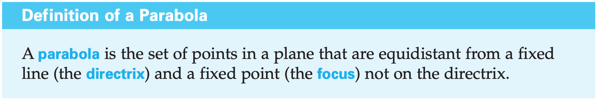
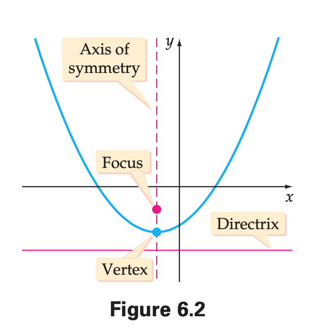
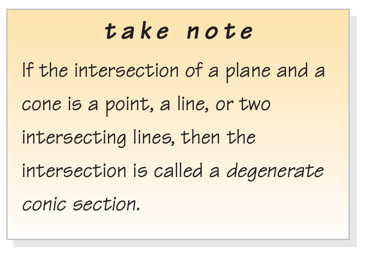
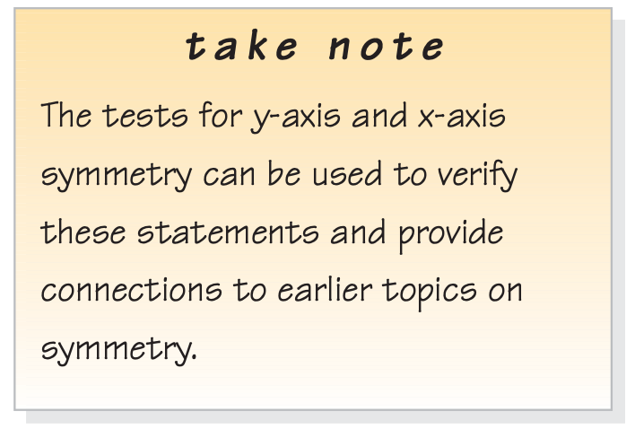
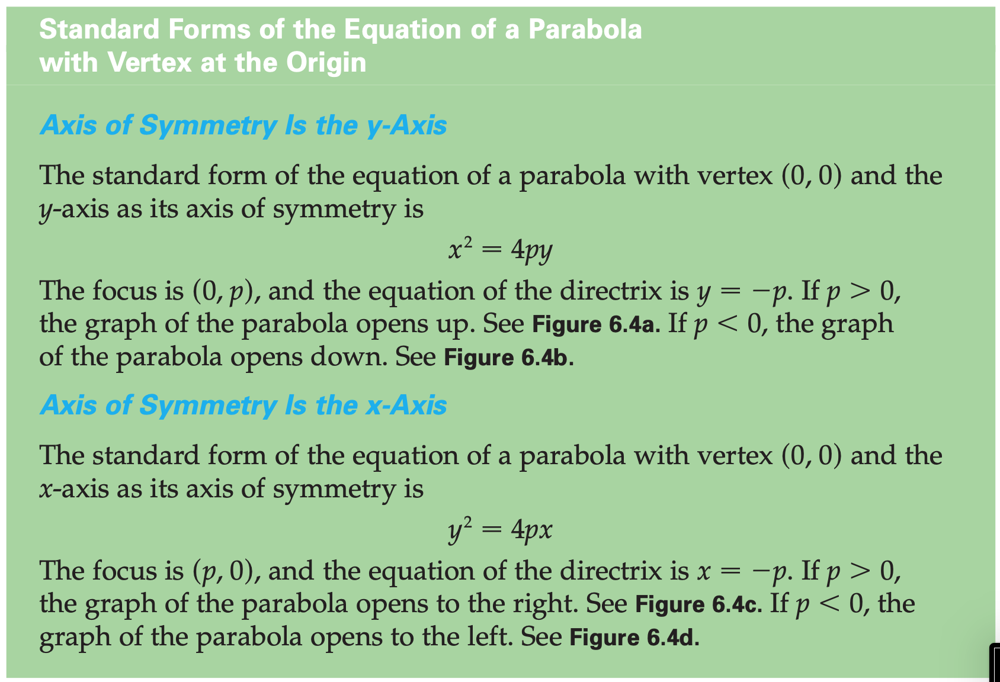
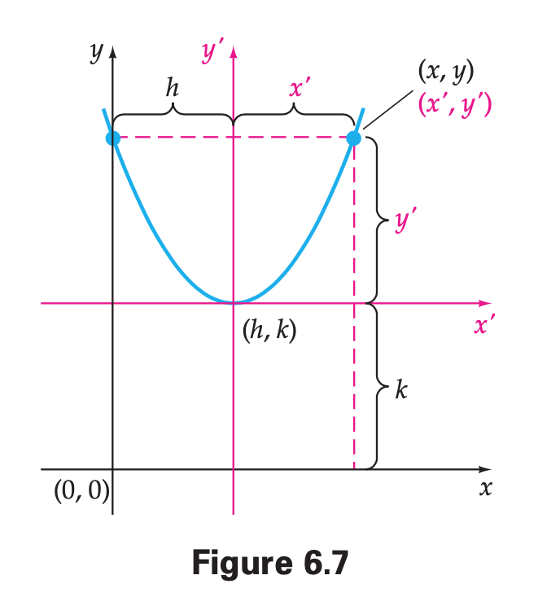
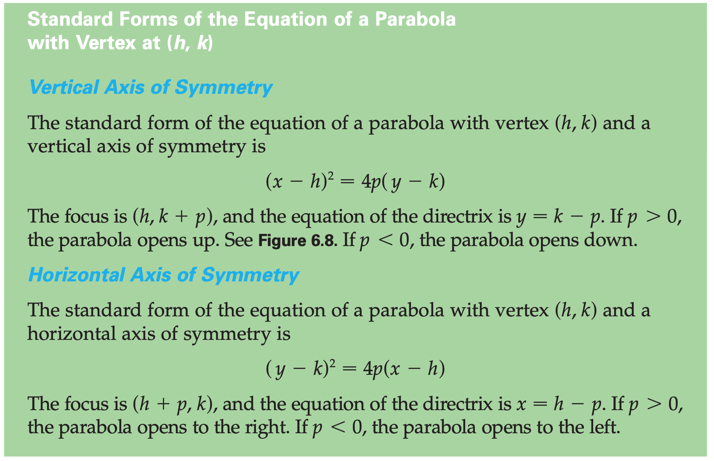
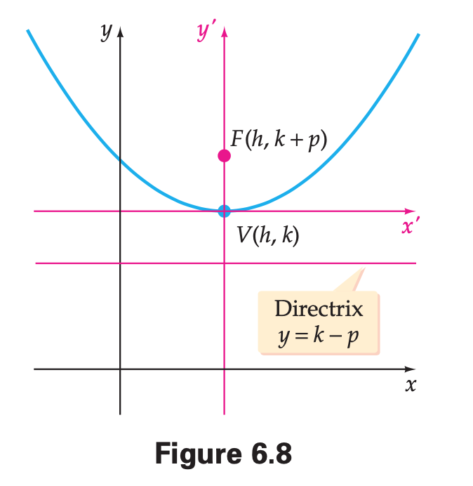
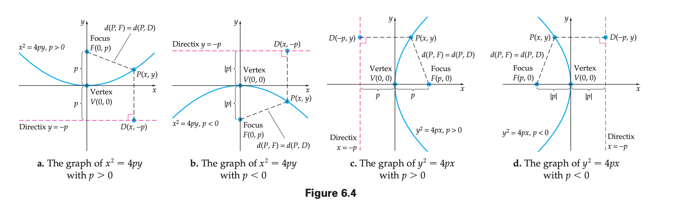

Chapter 6 | Topics in Analytic Geometry
§6.1 | Parabolas









§6.2 | Ellipses
Ellipse features review (Khan Academy)
§6.3 | Hyperbolas
§6.4 | Rotation of Axes
§6.5 | Introduction to Polar Coordinates
§6.6 | Polar Equation of the Circle
§6.7 | Parametric Equations